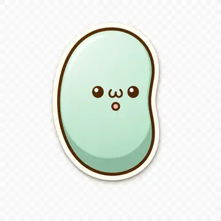

Candy Shop Deixe cair rebuçados. Construa guloseimas maiores.
Um puzzle de fusão de doces para telemóvel. Deixe cair doces num contentor, junte os iguais para criar doces maiores e desencadeie combos com física suave.
Em desenvolvimento ativo: 13 fases de doces, 10 contentores com regras próprias, oito efeitos de doces especiais, além de reserva, pré-visualização da queda e fila das três seguintes para planear cada queda.
13 docesuma cadeia de fusão
10 contentoresformas e regras diferentes
8 especiaisefeitos e receitas emparelhadas
Dentro da versão atual
Cada contentor muda a forma de jogar.
A regra de fusão é a mesma, mas o contentor não. Um frasco altera o espaço útil, uma ampulheta cria um estrangulamento, portais triplos dividem o seu plano, a gravidade rotativa vira do avesso os doces já assentes e paredes de obstáculos enchem o campo.
Estado da versão Desenvolvimento ativoOito alterações de regras visíveis
Arte real dos contentores do projeto Unity atual.


Visão geral do jogo
Candy Shop é um puzzle acolhedor de fusão de doces com física suave.
A ideia
Deixe cair doces, crie guloseimas maiores e deixe que a física suave transforme cada jogo numa cadeia de fusões.
Versão atual
Estão implementados dez conjuntos de regras de contentores, uma cadeia completa de 13 doces, oito efeitos especiais, pré-visualização da queda, reserva e uma fila das três seguintes.
Público
Jogadores casuais de puzzles que gostam de jogos de deixar cair e fundir, visuais acolhedores de doces, estratégia de baixa pressão e sessões rápidas no telemóvel.
Estado
Em desenvolvimento ativo. Estamos a trabalhar no desempenho no telemóvel, no polimento da interface, no equilíbrio dos doces, na dificuldade dos contentores e num feedback mais claro dos combos.
Recursos
O que há em Candy Shop.
Jogo de soltar e fundir doces
Coloca doces no contentor, usa a gravidade e o momento certo e funde doces iguais em guloseimas maiores.
Cadeia de doces de 13 fases
A cadeia dá a cada jogo um objetivo visível: funda o seu caminho do doce mais pequeno ao rebuçado maior.
Combos e doces especiais
Oito efeitos de doces especiais combinam-se em receitas emparelhadas e efeitos secundários, por isso cada jogo é diferente.
Aspeto suave de loja de doces
Cores suaves, fundos de loja de doces e uma interface adaptada ao toque para sessões curtas no telemóvel.
Ciclo de jogo
Como jogar Candy Shop
- Passo 01Leia o próximo doce
Veja o próximo doce, a pilha atual e o espaço que resta no contentor.
- Passo 02Escolha onde deixar cair
Uma queda pode preparar uma fusão limpa, bloquear uma jogada futura ou aumentar a pressão sobre a pilha.
- Passo 03Funda e faça combos
Os doces iguais fundem-se em guloseimas maiores, e uma boa colocação desencadeia reações em cadeia.
- Passo 04Avance e repita
Procure fases de doces mais altas, melhores jogadas e combos maiores.
História / mundo
Uma loja de doces onde os doces pequeninos crescem e ficam grandes.
Candy Shop nasceu em 2025 como a nossa segunda ideia de jogo: um puzzle de fusão de doces luminoso e acolhedor, com uma física suave e satisfatória.
O cenário é uma loja de doces: prateleiras, guloseimas, mascotes macios e contentores com ar de loja. Cada docinho pode crescer e tornar-se uma guloseima maior.
Depois do primeiro protótipo, ampliámos o documento de design, repensámos a direção, concluímos a cadeia de fusão de 13 doces e criámos dez conjuntos de regras de contentores, receitas especiais, ferramentas de planeamento e os primeiros sistemas de progressão.
- Cadeia de fusão
- 13 fases de doces
- Foco no design
- Física suave e feedback claro dos combos
- Contentores
- 10 formas com regras próprias
- Fase atual
- Desenvolvimento e otimização ativos
Num relance
Uma regra de fusão familiar em dez contentores diferentes.
A regra de deixar cair e fundir continua simples. Cada contentor altera o espaço útil, a gravidade, os obstáculos ou a forma como os doces entram na pilha.
A versão atual prolonga as partidas curtas com desafios diários, descobertas no Candy Book e tabelas de pontuação locais.
- Género
- Puzzle casual de fusão de doces
- Plataforma de destino
- iOS/Android
- Formato da sessão
- Partidas curtas e repetíveis
- Estúdio
- WillowinWorlds
Baixar recursos
Recursos de imprensa e criadores de Candy Shop
Antevisões WebP para cobertura de imprensa, avaliação por editoras e referências de páginas de loja. Os ficheiros de origem em resolução total estão disponíveis a pedido.
Cenas de marca e loja
 Mascote ursoA personagem mascote urso.
Mascote ursoA personagem mascote urso.
 Menu da lojaFundo acolhedor do menu da loja de doces.
Menu da lojaFundo acolhedor do menu da loja de doces.
 Fundo de pausaFundo do ecrã de pausa.
Fundo de pausaFundo do ecrã de pausa.
Fundos
 Fundo 01Fundo de loja de doces.
Fundo 01Fundo de loja de doces.
 Fundo 02Fundo de loja de doces.
Fundo 02Fundo de loja de doces.
 Fundo 03Fundo de loja de doces.
Fundo 03Fundo de loja de doces.
 Fundo 04Fundo de loja de doces.
Fundo 04Fundo de loja de doces.
 Fundo 05Fundo de loja de doces.
Fundo 05Fundo de loja de doces.
 Fundo 06Fundo de loja de doces.
Fundo 06Fundo de loja de doces.
 Fundo 07Fundo de loja de doces.
Fundo 07Fundo de loja de doces.
 Fundo 08Fundo de loja de doces.
Fundo 08Fundo de loja de doces.
 Fundo 09Fundo de loja de doces.
Fundo 09Fundo de loja de doces.
 Fundo 10Fundo de loja de doces.
Fundo 10Fundo de loja de doces.
Cadeia de doces
 Doce 01Primeiro doce na cadeia de fusão.
Doce 01Primeiro doce na cadeia de fusão.
 Doce 02Segundo doce na cadeia de fusão.
Doce 02Segundo doce na cadeia de fusão.


Doce 03Terceiro doce na cadeia de fusão. Doce 04Quarto doce na cadeia de fusão.
Doce 04Quarto doce na cadeia de fusão.
 Doce 05Quinto doce na cadeia de fusão.
Doce 05Quinto doce na cadeia de fusão.
 Doce 06Sexto doce na cadeia de fusão.
Doce 06Sexto doce na cadeia de fusão.
 Doce 07Sétimo doce na cadeia de fusão.
Doce 07Sétimo doce na cadeia de fusão.
 Doce 08Oitavo doce na cadeia de fusão.
Doce 08Oitavo doce na cadeia de fusão.
 Doce 09Nono doce na cadeia de fusão.
Doce 09Nono doce na cadeia de fusão.
 Doces 10Décimo doce na cadeia de fusão.
Doces 10Décimo doce na cadeia de fusão.
 Doce 11Décimo primeiro doce na cadeia de fusão.
Doce 11Décimo primeiro doce na cadeia de fusão.
 Doce 12Décimo segundo doce na cadeia de fusão.
Doce 12Décimo segundo doce na cadeia de fusão.
 Doce 13Doce final na cadeia de fusão.
Doce 13Doce final na cadeia de fusão.
Cronologia do desenvolvimento
Cronologia de desenvolvimento de Candy Shop
- Final de junho de 2025Segunda ideia de jogo
Começámos a explorar um jogo de doces luminoso e simples.
- Agosto de 2025Primeiros personagens de doces
Foram criadas as primeiras personagens de doces. Mais tarde, a cadeia de fusão passou de 11 doces para 13, para que a progressão dure mais.
- Setembro de 2025Primeiro protótipo
Construímos e testámos o primeiro protótipo. Mostrou que a ideia precisava de mais identidade, mais progressão e de um gancho mais claro.
- Outubro de 2025Expansão do documento de design
O documento de design foi expandido com novas mecânicas, doces especiais, ideias de progressão e direção de contentores.
- Dezembro de 2025 a fevereiro de 2026Sistemas centrais de doces
A mecânica principal dos doces foi implementada, o conjunto de doces foi concluído e os primeiros sistemas de contentores começaram.
- Abril a julho de 2026Sistemas e polimento
A versão foi alargada com dez conjuntos de regras de contentores, interações com doces especiais, ferramentas de planeamento, desafios diários e sistemas de coleção, a par de otimização e polimento da interface.
Perguntas frequentes sobre Candy Shop
Perguntas frequentes sobre Candy Shop
Que tipo de jogo é o Candy Shop?
Um puzzle de fusão de doces com física suave. Deixe cair doces num contentor e funda os iguais em doces maiores, tal como no Suika Game, com doces especiais e combos pelo caminho.
Como se joga Candy Shop?
Escolha onde deixar cair o próximo doce, funda os iguais, gira o espaço do contentor e avance pela cadeia de 13 fases.
Candy Shop já foi lançado?
Ainda não. Está em desenvolvimento ativo, e o projeto atual já tem a cadeia de fusão, dez conjuntos de regras de contentores, receitas especiais, um desafio diário, o Candy Book e tabelas de pontuação locais. Não há data de lançamento pública. As plataformas-alvo são iOS e Android.
O que torna Candy Shop diferente?
Dez contentores, cada um com a sua forma e as suas regras, mudam a maneira de jogar um ciclo de fusão familiar. Os doces especiais acrescentam receitas e combos.
Quem faz Candy Shop?
WillowinWorlds, um estúdio independente que cria jogos de puzzle e arcade para telemóvel.
Posso usar os materiais de imprensa de Candy Shop?
Sim, para imprensa, avaliação por editoras e referências de loja. Os ficheiros de origem continuam privados, a não ser que no-los peça.
Devlog Candy Shop
O que mudou e quando
- Atualização do menu e do HUD
O menu principal, a seleção de níveis, os controlos do HUD e os ícones de comando partilham agora o mesmo aspeto, e mais testes de stress no motor cobrem o fluxo atualizado.
- Julho de 2026Versão de produção mais completa
O projeto atual combina a cadeia de fusão completa com dez conjuntos de regras de contentores, receitas especiais, ferramentas de planeamento, desafios diários, descobertas Candy Book e tabelas de pontuação locais.
- Abril de 2026Revisão dos elementos de UI
Foram criados os primeiros elementos importantes da interface, dando a Candy Shop a sua primeira interface a sério para telemóvel.
- Fevereiro de 2026Cadeia de doces e contentores
O conjunto completo de doces foi concluído e os sistemas de contentores começaram a alterar a geometria, a gravidade e a pressão do puzzle.
- Dezembro de 2025Mecânica central dos doces
As principais mecânicas dos doces foram implementadas em bruto, transformando o documento de design alargado num sistema jogável.
- Outubro de 2025Expansão do documento de design
Depois de o primeiro protótipo não parecer suficientemente forte, o design foi expandido com doces especiais e ideias de progressão.
- Agosto de 2025Primeiros personagens de doces
Foram criadas as primeiras personagens de doces, estabelecendo a direção suave e amigável da cadeia de fusão.